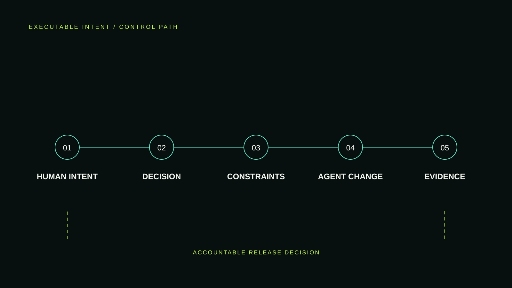
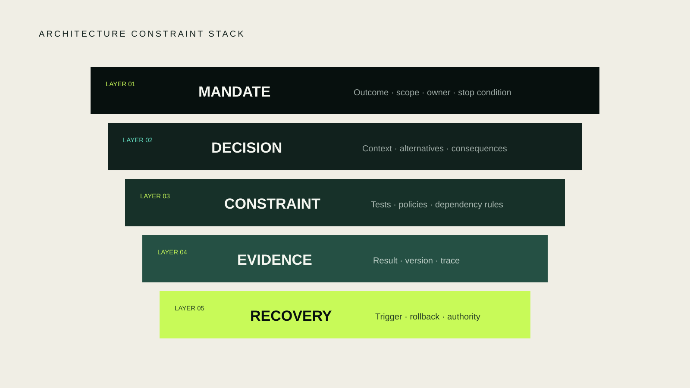
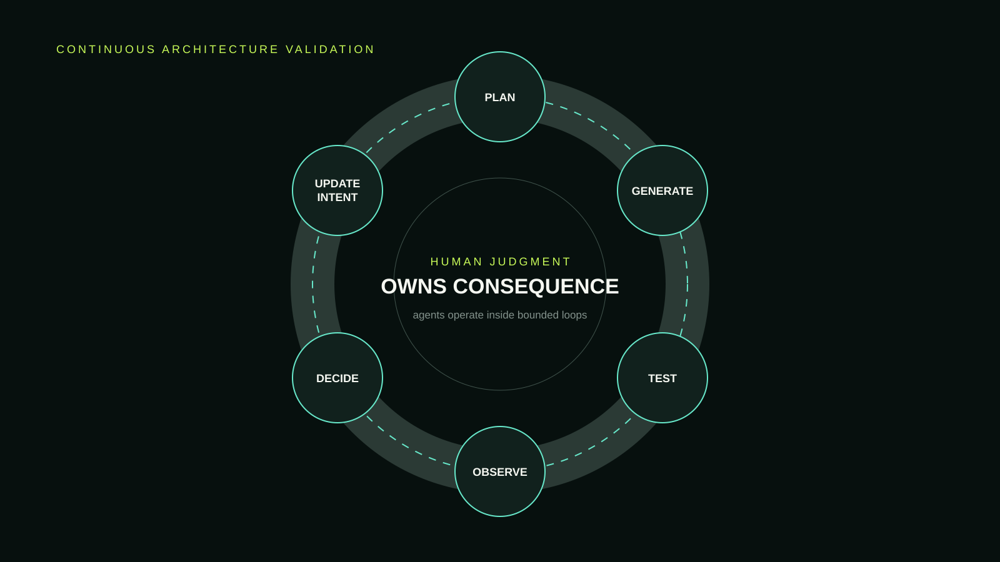

AI MASTERY / SYSTEMS FIELD GUIDE / 001
Executable intent for AI coding agents.
Coding agents can generate implementation faster than a team can explain its architecture. The answer is a control system that connects human decisions to machine-checkable boundaries, evidence, and recovery.

The hardest failure in agentic software development is not invalid syntax. It is a locally valid change that violates a decision nobody made legible.
The architecture problem is becoming an intent problem
Modern coding agents can traverse repositories, modify files, run tests, and repair errors. Anthropic’s analysis of 500,000 coding interactions found substantially more automation in its coding agent than in its general chat interface. The capability is useful, but it changes the unit of supervision: a reviewer is no longer assessing only a diff. They are assessing a chain of decisions compressed into a diff.
The familiar response—“keep a human in the loop”—is incomplete. Which loop? A person approving hundreds of generated edits is technically present and operationally absent. Kief Morris’s model of humans managing the why loop while agents operate in how loops offers a better division: people own outcomes and consequential constraints; automation handles bounded execution and repeatable verification.
The missing interface is executable intent: goals, invariants, and rationale represented in forms people can challenge and machines can test.
A five-layer constraint stack for coding agents
Agent instructions emphasize the immediate task. Architecture lives one level above it: architecture defines which implementations are acceptable even when the requested feature works.

- MandateDefine the outcome, owner, scope, and stop condition.
- DecisionRecord context, boundary, alternatives, and consequences.
- ConstraintTranslate checkable properties into tests, policies, dependency rules, or budgets.
- EvidencePreserve what ran, which version ran it, and why the result supports release.
- RecoveryName the rollback path, trigger, cost, and authority.
The layers are deliberately different. An architecture decision record cannot prove implementation conformance. A test cannot explain why its rule matters. A green build cannot decide whether the original mandate still makes sense.
Compile architecture decisions into guardrails
Michael Nygard’s architecture decision record format captures context, decision, status, and consequences. For agentic work, add the invariant the decision protects and evidence that can expose a violation.
- Decision
- Only Checkout Service may initiate payment mutation.
- Invariant
- No other service invokes the mutation interface.
- Evidence
- Dependency graph check and authorization contract test.
- Recovery
- Disable the new route and restore the previous policy bundle.
- Owner
- Payments platform lead.
Now prose has an executable counterpart. A dependency rule can reject prohibited imports. A contract test can verify authorization. A policy gate can block release. Thoughtworks calls objective integrity checks like these architectural fitness functions.
Not every architectural quality should become a binary test. Maintainability, product fit, and ownership often require judgment. Automate the detectable boundary, then route unresolved consequence to an accountable person.
Build a verification loop, not a wall of rules
A guardrail that only blocks change eventually becomes stale. A useful system returns feedback: which constraint fired, which evidence supports it, whether the constraint still reflects the architecture, and who can revise it.

Rules encode yesterday’s understanding. A latency budget or ownership boundary can become wrong. The owner must update the decision and its checks together, preserving why the rule changed.
Margaret-Anne Storey’s model of technical, cognitive, and intent debt clarifies the stakes. Technical debt limits change in code. Cognitive debt erodes shared understanding. Intent debt appears when goals and rationale are absent from artifacts that people and agents need. Executable intent keeps important reasoning connected to behavior.
Start with one boundary that already causes review pain
Do not formalize the entire architecture. Pick one recurring, consequential question: who may write this data, which service may call this interface, what latency must remain true, or which security stage may never be skipped.
- Write the constraint in one sentence.
- Name its owner and consequence of violation.
- Create or update the ADR.
- Add the cheapest reliable check.
- Store the result as release evidence.
- Define a rollback trigger before deployment.
Test the system against a deliberately prohibited change. If the check fails clearly, produces useful evidence, and routes the exception to the right owner, the first loop works.
This approach complements the virtualmase field note The Scarce Skill Is Deciding What Must Stay True. That essay defines the judgment problem. This guide turns one part of that judgment into an operating architecture.
Choose one invariant.
Make it observable.
Use the Action Boundary Brief before consequential work and the AI Change Record after it.